Информация
Докладчик
Задание по mc
Я запускал mc, изучал его структуру и меню:
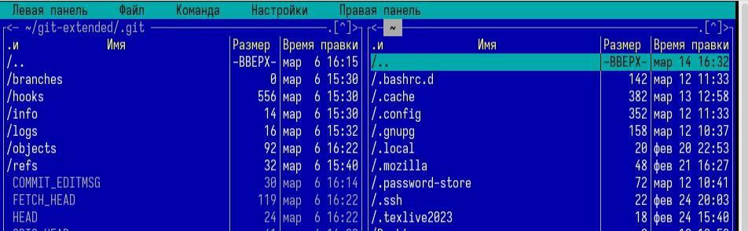
Рис 1: Командная оболочка mc
Задание по mc
Используя управляющие клавиши я; скопировал файл README.md в домашний
каталог:
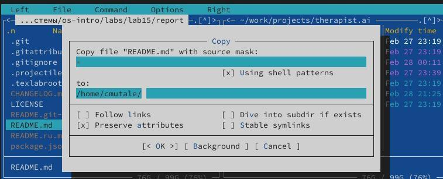
Рис 2: Копирование файла
Задание по mc
Создал файл new в ~/work/blog и удалила его:
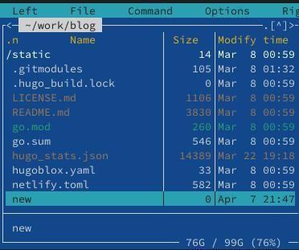
Рис 3: Созданный файл
Задание по mc
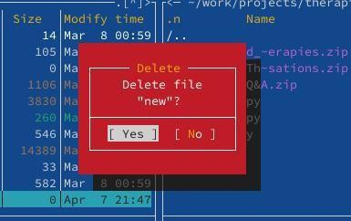
Рис 4: Удаление файла
Задание по mc
Получил информацию о размере и правах доступа на файл README.md:
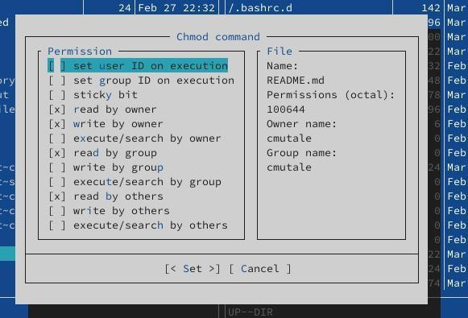
Рис 5: Информация о
README.md
Задание по mc
В правой панели вывел информацию о файле. При этом я получаю больше
информации чем в выводе ls:
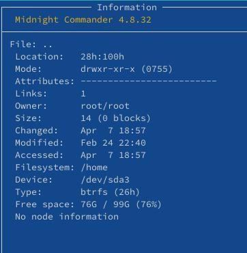
Рис 6: Информфцию о файле
Задание по mc
Используя возможности подменю Файл; я посмотрел содержаемые
текстового файла:
 Рис 7: Содержаемые файла
Рис 7: Содержаемые файла
Задание по mc
редактировал содержаемые текстового файла (abrt на mi):
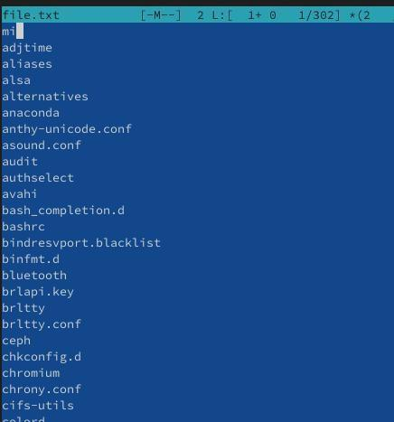
Рис 8: Редактирование файла
Задание по mc
Создал новый каталог:
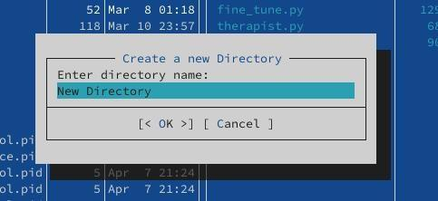
Рис 9: создание каталога
Задание по mc
и скопировал файл в ,только что созданный каталог:
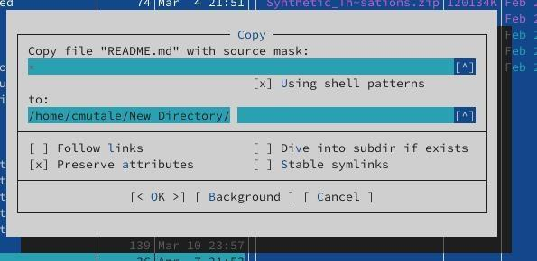
Рис 10: копирование файла
Задание по mc
С помощью подменю команда можно найти в файловой системе файл с
заданными условиями:
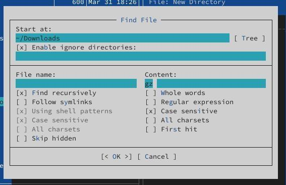
Рис 11: файлы которые содержат
gz
Задание по mc
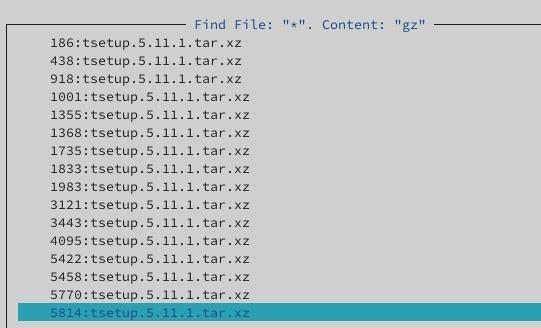
Рис 12: результаты поиска
Задание по mc
Исользуя подменю команда я повторил одну из предыдущих команд:
 Рис 13: повторение команды
Рис 13: повторение команды
Задание по mc
Также перешёл в домашний каталог и анализировал файл меню и файл
расширения:
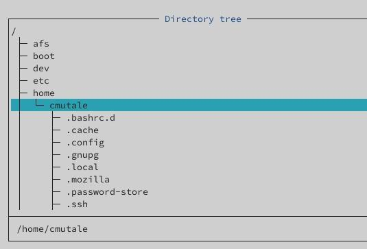
Рис 14: Переход в домашний
каталог
Задание по mc
 Рис 15: файл расширения
Рис 15: файл расширения
Задание по mc
Из подменю настройка вызвал окна настройки панели:
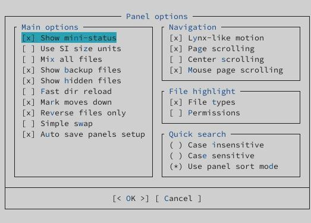
Рис 16: Настройка панели
Задание по mc
Настройки внешнего вида:
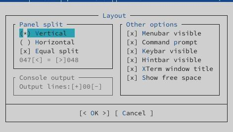
Рис 17: Настройки внешнего
вида
Задание по встроенному
редактору mc
С помощью команды touch создал text.txt:
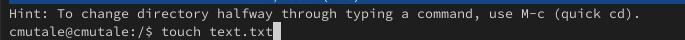
Рис 18: Создание text.txt
Задание по встроенному
редактору mc
Далее открыл его для редактирования с помощью f4 и с shift ctrl ins
вставил текст:
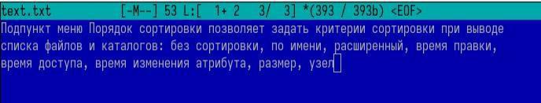
Рис 19: Редактирование
text.txt
Задание по встроенному
редактору mc
С помощью f3 выделил текст и удалил выделеные слова f8:
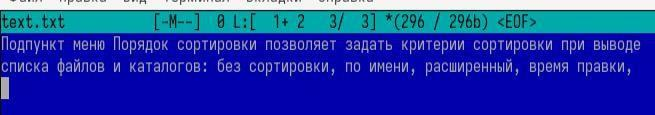
Рис 20: Удаление текста
Задание по встроенному
редактору mc
Перемещал выделенный текст с помощью f6:
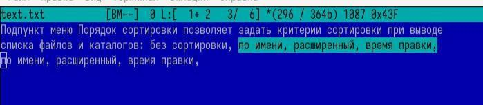
Рис 21: Перемещение текста
Задание по встроенному
редактору mc
Сохранил изменении с помощью f2:
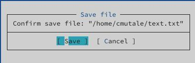
Рис 22: Сохранение изменений в
файле
Задание по встроенному
редактору mc
С помощью ctrl-u отменила последнее действие:
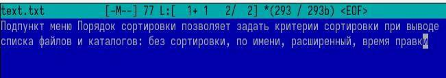
Рис 23: Отменение последнего
действия
Задание по встроенному
редактору mc
Используя pg up и pg dn перешёл в начало и конец файла и написал
некоторый текст. Затем сохранил и закрыл файл:
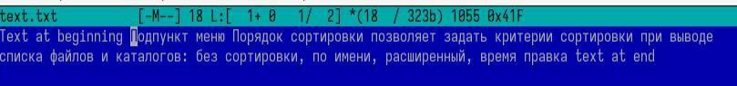
Рис 24: Добавление текста
Задание по встроенному
редактору mc
Открыл файл с исходным текстом на cpp:
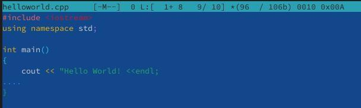
Рис 25: файл cpp
Задание по встроенному
редактору mc
Используя подменю команда я выключила подсветку синтаксиса:
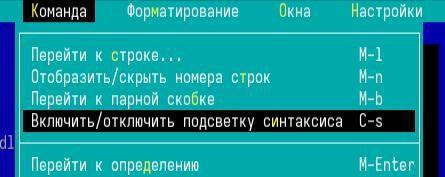
Рис 26: Подменю команда
Задание по встроенному
редактору mc
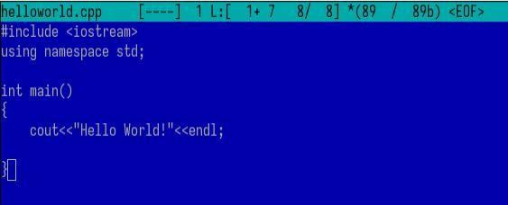
Рис 27: подсветка синтаксиса